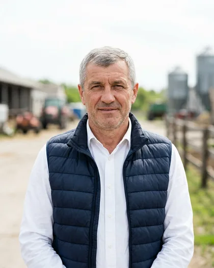
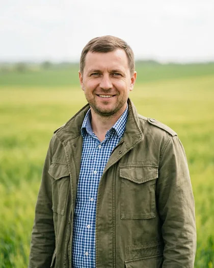
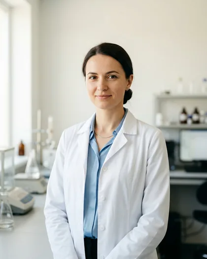
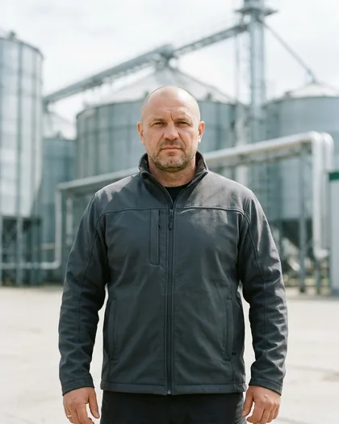

01
0ha
Land bank
ABOUT THE COMPANY
One owner along the whole path of the grain
We are not middlemen. The land, the machinery, the dryers and the elevator are ours. So one company answers for the quality of a consignment, not a chain of five suppliers.



+4 More than 40 regular partners
ABOUT THE COMPANY
One owner for the whole journey of the grain
We are not middlemen. The land, the machinery, the dryers and the elevator are ours. So one company answers for the quality of a consignment, not a chain of five suppliers.
CENTRAGRO PLUS LLC farms 14,200 hectares in Vinnytsia region. The black soils of Podillia, a seven-field crop rotation and our own machinery fleet deliver stable yields even in dry years.
Every consignment goes through our laboratory before dispatch: protein, moisture, test weight, falling number, foreign matter. The figures are added to the documents — the partner sees the grain before it has left the yard.

02
0
Crops in rotation
03
0t
Storage capacity
04
0t
Dispatched per season
05
0years
Trading since 2008
06
0
Export countries
TEAM
The people accountable for every consignment
A small team that has worked together for more than ten years — and each of them is someone you will speak to directly.
Bohdan Hrytsenko
Founded the farm in 2008 with 800 hectares. Leads the negotiations on every long-term agreement.
Taras Lozovyi
Responsible for the crop rotation, hybrid selection and application maps. Drove the move to no-till.
Nataliia Bondar
Draws up the quality certificate for every consignment. Her signature stands behind the figures that travel with the grain.

Serhii Kushnir
The grain elevator, the dryers, the weighbridge, the dispatch schedule. Keeps the delivery haul inside 14 km.
HISTORY
Eighteen seasons, one direction
We did not buy a ready-made business — we grew the farm field by field.
2008
The first 800 hectares
Leased land in two villages, one old combine and a contract with the local grain elevator.
2012
Our own machinery
The first new combine and a wide drill. We stopped depending on contractors at harvest.
2016
Drying complex
Two dryers rated at 400 t/day. From that point maize went to partners dry, not "however it came off the field".
2019
A 30,000 t grain elevator
Separate storage by class. We began working with flour mills directly, without a trader in between.
2022
Laboratory and no-till
Our own laboratory at the elevator. The first 900 hectares moved to no-till.
2026
14,200 hectares
Seven crops, a 46,000 t grain elevator, drying at 1,200 t/day, exports to 14 countries.

More than 40 regular partners
Ready to quote your volume for this season
Send us the crop, the volume and the quality parameters you need — we will reply with a price and a dispatch schedule within one working day.
TESTIMONIALS
What our partners say
Companies that buy grain from us every season.

We have been taking their wheat for four seasons. The main thing is that the declared protein and the actual protein match. In four years, not one recalculation on the weighbridge.

A forward contract with them covers a third of the mill's annual requirement. The price is fixed in March — and in October it is exactly what we agreed.

The maize arrives dry, at 13.5–14%. For feed production that is critical: it does not heat up in the silo and does not drag losses along with it.